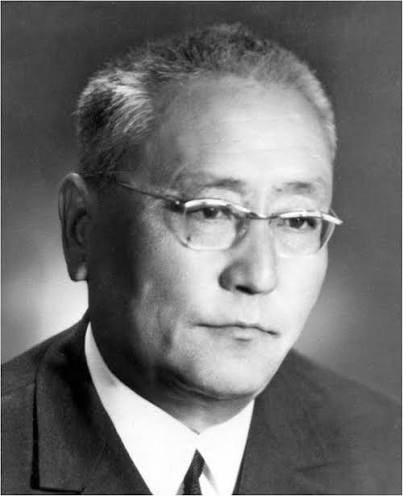
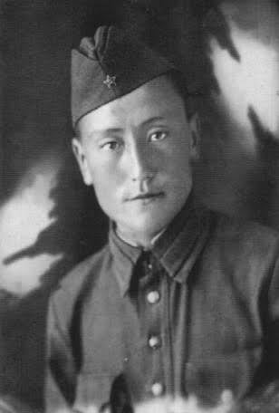
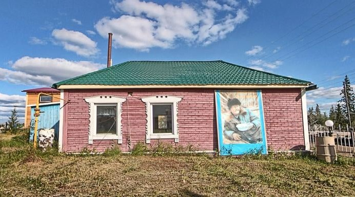

Created with Mobirise
HTML Builder
Писатель, народный поэт Якутии. Участник Великой Отечественной войны. Член Союза писателей СССР с 1957 г.
Петр Тобуроков - один из тех писателей, чье творчество знают и любят многие. С его веселых остроумных считалок, скороговорок, мудрых сказок начинается знакомство юных читателей с родной литературой. Сотни его стихотворений, положенные на музыку, стали народными песнями, лучшими популяризаторами творчества поэта.
Петр Николаевич Тобуроков родился 25 октября 1917 года в Оросунском наслеге Верхневилюйского улуса в крестьянской семье.
В 1937 году окончил Вилюйское педагогическое училище им. Н. Г. Чернышевского. Работал учителем и директором школ, старшим преподавателем и руководителем творческого семинара в Московском литературном институте им. А. М. Горького.
Пётр Николаевич был призван на фронт 22 июня 1942 года. Сражался на Сталинградском фронте (886-й полк 298 дивизии), был пулемётчиком-наводчиком. После ранения долго лечился в Саратовском военном госпитале. Был демобилизован в 1943 году.
Пётр Тобуроков более тридцати лет своей жизни посвятил педагогической работе. Наблюдения, накопленные за эти годы, и любовь к детям помогли поэту создать произведения, раскрывающие психологию малышей.
Умер 6 марта 2001 года.
Меткая поэтическая сатира, задушевные лирические стихи
и поэмы находят своего читателя еще со школьных хрестоматий и сопровождают его в течение всей жизни, открывая все новые и новые страницы творчества известного по всей республике народного поэта Якутии Петра Николаевича Тобурокова.
Поэт издал ряд книг на якутском и русском языках. Это сатирическая поэма для детей «Чангый Чаган» (1956), сборник стихов «Долина белых журавлей» (1960), поэмы для младшего и среднего школьного возраста «Белая белка» (1961) и «Собрание букв» (1961), сборники стихов и поэм «Искры снега» (1962), «Стихи, поэмы» (1967), «Птички встречают солнце» (1970), «На берегах Вилюя» (1957) и «Цветы на снегу» (1966).
Творчество народного поэта Петра Тобурокова многогранно и отличается широким жанровым диапазоном: это сотни песен и стихов, поэмы, сказки, баллады, сатира, лирическая проза, оригинальные пьесы, философские эссе.
Известные произведения: «Ытанньах герой буолбатах», «Буукубалар мунньахтара», «Үлэ, эйэ дойдутугар», «Төрөөбүт дойдубар», «Снег».
Член Союза писателей СССР с 1957 года.
Первое стихотворение поэта «Песня колхозницы» было напечатано в 1935 году в Вилюйской районной газете «Колхозный путь», когда автор был учащимся Вилюйского педагогического училища. С тех пор его поэтические произведения систематически печатались на страницах районных и республиканских газет и альманаха, а затем журнала «Хотугу сулус».
Поэма П. Тобурокова "Буукубалар мунньахтара" ("Собрание букв") и рассказ "Лыах" ("Бабочка") в 1946 г. были удостоены второй премии на республиканском конкурсе по детской литературе. Первые сборники стихов "Үлэ, эйэ дойдутугар" ("В стране мира и труда"), "Төрөөбүт дойдубар" ("Родине") принесли поэту широкую известность.

Петр Тобуроков - старший сын в семье. Он с детства отличался серьезностью, ответственностью . Мастерил братьям и сестрам причудливые игрушки из дерева, охотился наравне с отцом , обучал навыкам находчивого и смелого таежного следопыта младших братьев и сочинял стихи.
С ранних лет будущий поэт приобщился к богатству родного
языка и к сокровищнице народной поэзии. Вообще ему были присущи разнообразные дарования и увлечения: он неплохо рисовал, занимался фотографией, пел, выступал как запевала народного танца осуохай.
Детский писатель
П. Н. Тобуроков большую часть своей жизни посвятил делу просвещения, потому хорошо знает психологию, интересы и запросы детей. Он жил в постоянном живом общении с ними и это помогало поэту с полуслова понять детскую душу, замечать их радости и огорчения, маленькие тайны и дурные привычки. Все это помогало ему создавать высокохудожественные, но в то же время очень увлекательные для детского восприятия произведения. Многие стихи и поэмы автора стали хрестоматийными, некоторые из них заучивают наизусть, как считалочки.
П. Тобурокап "Буквалар мунньахтара": [видеозапись]
Поэт-сатирик
П. Тобуроков не только общепризнанный классик якутской детской литературы, но проникновенный поэт-лирик, поэт-песенник, поэт-сатирик.
В своих сатирических произведениях таких, как «Глупый глухарь и хитрая лиса», «Медведь и мышь», «Заяц начальник» и других поэт использовал изобразительные средства устного народного творчества якутов. Он творчески усваивал якутские пословицы и поговорки, острые словесные обороты, которыми так богат якутский язык.
Подробнее: Васильева, Дора Егоровна. Народные писатели Якутии : Очерки. - Якутск : Бичик, 1995. - 160 с.

В пору цветущей молодости II. Тобурокова внезапно
ворвалась война, неся с собой страдания и смерть, разрушения и лишения. Молодой учитель из Якутии был мобилизован в действующую армию и стал пулеметчиком-наводчиком на Сталинградском фронте. С поля брани он присылал поэтические произведения, которые опубликовались на страницах газеты «Кыым».
Пётр Николаевич был призван на фронт 22 июня 1942 года. Сражался на Сталинградском фронте (886-й полк 298 дивизии), был пулемётчиком-наводчиком. Фронтовая дружба поэта с простыми солдатами переросла в глубокое интернациональное чувство. После ранения долго лечился в Саратовском военном госпитале, был демобилизован в 1943 году. После этого вернулся на Родину и продолжил свою педагогическую деятельность.
Награждён орденами Отечественной войны 2-й степени, Трудового Красного Знамени, «Знак Почёта», медалями «За доблестный труд в Великой Отечественной войне 1941-1945 гг.», «За победу над Германией», «ХХ лет Победы» и Почётными грамотами.
Писатели-фронтовики – это отдельное поколение героических людей, испытавших на себе все тяготы военного и послевоенного периода. Их произведения и песни того времени позволяют нам окунуться в то суровое время, увидеть и услышать великий подвиг народа.
Подробнее: https://nlrs.ru/to-readers/segments/school/open/65956
В Великой Отечественной войне 25 якутских писателей-фронтовиков воевали с оружием в руках на полях сражений. Они в коротких перерывах между боями писали о событиях фронта в республиканскую печать, вели дневники, слагали стихи и рассказы
Подробнее: https://nlrs.ru/to-readers/segments/school/open/65953
Петр Тобуроков широко известен как поэт-песенник. К его поэзии обращаются все мелодисты и композиторы Якутии. Свыше двухсот мелодий создано на стихотворения поэта, т. е. вся его лирика проникнута песенной стихией, начиная с детских новогодних стихов и кончая стихотворениями о родной земле, о красоте природы, о любви.
В сборник вошли песни, написанные на стихи поэта в разное время
Перейти
Стихотворение Петра Тобурокова, читает член литературного объединения "Иэйии" Каджана Евсеева-Чэлгийэ
Перейти
Стихотворение Петра Тобурокова, читает член литературного объединения "Иэйии" Тамара Николаева-Сарыада
Перейти
На грампластинку вошли стихотворения писателей Якутии
Перейти
Народный поэт Республики Саха (Якутия), Заслуженный работник культуры Республики Саха (Якутия).
Награждён орденами Отечественной войны 2-й степени, Трудового Красного Знамени, «Знак Почёта», медалями «За доблестный труд в Великой Отечественной войне 1941-1945 гг.», «За победу над Германией», «ХХ лет Победы» и Почётными грамотами.

Музей располагает широкой экспозицией (личные вещи, архив поэта, его литературное наследие и т.д.), а также обширной библиотекой.
Бюст поэта в исполнении скульптора С.К.Прокопьева, установлен посмертно в 2007 году (к 90-летию поэта).
Адрес:
с. Хомустах Намского наслега, Верхневилюйский улус
Ул. П.Тобурокова,14
В подборку вошли издания, отражающие многогранную творческую деятельность Петра Тобурокова, как поэта, прозаика, детского писателя, драматурга
Created with Mobirise
HTML Builder